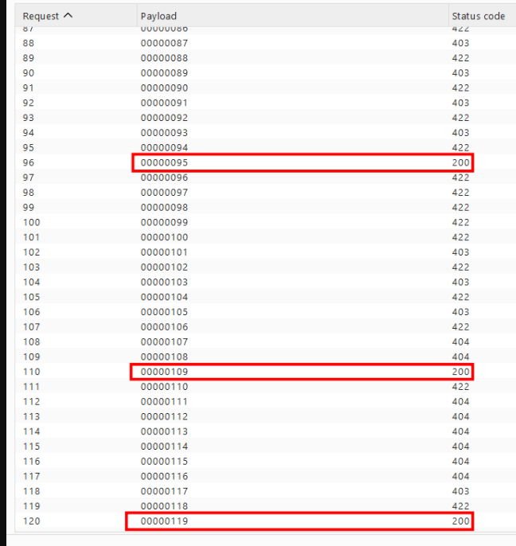

Overview: While testing examble.com , I was collecting JS bundles served by the application and reverse-engineering the backend API surface from the webpack modules. I came across an RPC method, Report/findByTestSessionId, that fetches a full candidate assessment report by a numeric session ID. The application also exposes a public demo campaign for prospects to preview reports, which reveals that these session IDs are plain sequential integers. By combining that with the fact that the report endpoint never authenticates the caller, any unauthenticated user can retrieve full candidate reports — name/email, submitted source code, anti-cheat telemetry — across the sequential ID space.
RECON Discovery & Analysis
While hunting on examble.com, I was collecting the JS files served by the application and analyzing them for endpoints and route hints.
Inside the main bundle (app.08b85bea.js, webpack module 137427 — the Report service wrapper), I found the RPC method that caught my attention:
Combined with the RPC client (module 976642) that composes the request URL:
this revealed the full endpoint path:
The naming suggested it fetches a candidate's detailed report by numeric session ID. I hadn't interacted with the API yet, so I checked whether the app exposes any public data that would reveal the ID format. It does:
Key observations from the demo dataset:
- ✅
testSessionIdis a plain sequential integer (18911544 – 18912589, newer seed 21462893) - ✅ The detailed-report endpoint exists and takes exactly that integer
- ✅ A tight numeric range means the identifier space is enumerable, unlike a UUID
EXPLOIT Exploitation & Differential Proof
Step 1 — Unauthenticated Report Access
I took a testSessionId from the public demo dataset and sent a request to findByTestSessionId with no session or authorization header at all:
The server returned the full detailed report — completely unauthenticated:
At this point the impact was still qualified — the demonstrated session belongs to CoderPad's intentionally-public demo campaign. So I looked for proof that this is an authorization gap, and not simply "demo data is public."
Step 2 — Differential Proof: the Backend Can Enforce, But Doesn't Here
The same service family contains sibling methods that do enforce ownership. I called them against a non-demo campaign, with the same no-session setup:
| Endpoint | Non-demo input | Response |
|---|---|---|
| Campaign/findById | [267462] | 403 NotInOwningCompany |
| Report/findByCampaignId | [267462] | 403 ValidUserRequired |
| Report/findByTestSessionId | [123, null] | 404 CANDIDATE_NOT_FOUND |
| Report/findByCampaignIdAndCandidateGlobalId | [267462, decoy-uuid] | 404 CANDIDATE_NOT_FOUND |
- ✅ Sibling endpoints reject non-demo data with 403 (an authorization gate exists)
- ✅ The candidate-level fetchers never produce an auth error — invalid or foreign IDs simply yield "not found"
- ✅ If a gate existed on these methods, a non-demo ID would 401/403 before the lookup — exactly like the siblings do
Step 3 — Enumerable IDs ⇒ Persistent, Scalable Access
The final step involves the identifier system. The session identifier testSessionId is a sequentially incrementing 8-digit integer; a simple Python script can be used to send requests with change id from 00000000 to 99999999, thereby allowing us to guess all report IDs.

- Any unauthenticated user can retrieve full candidate reports across tenants ✅